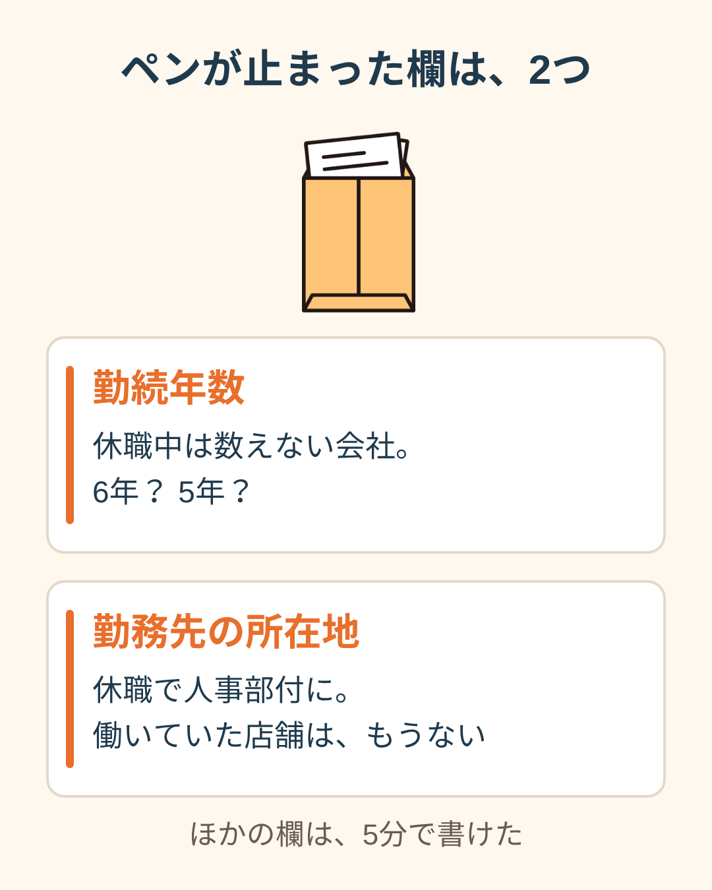
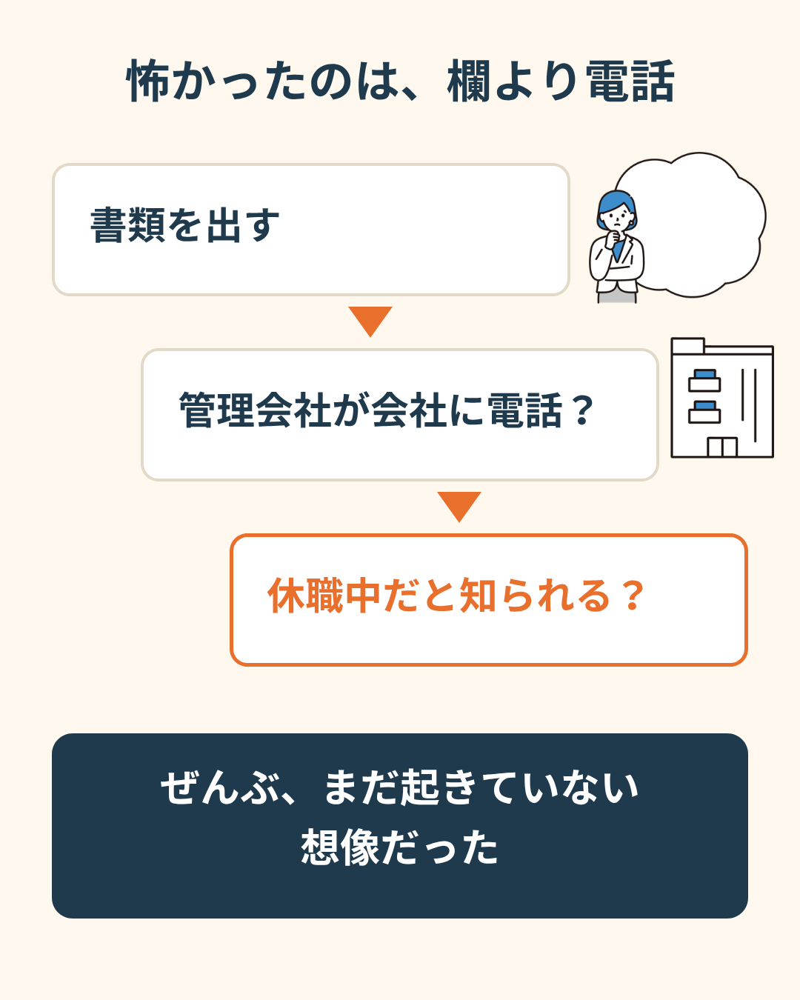
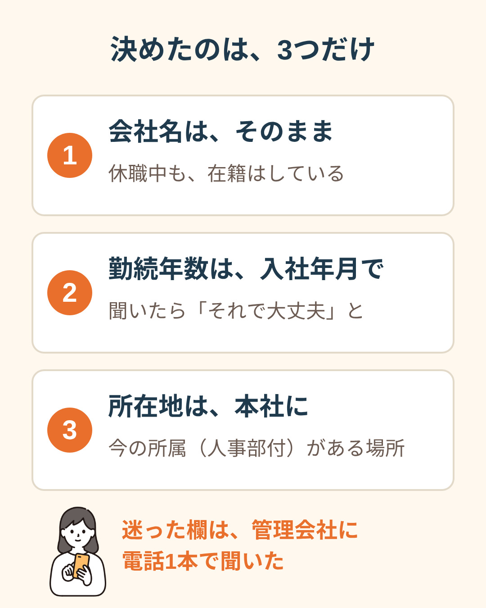
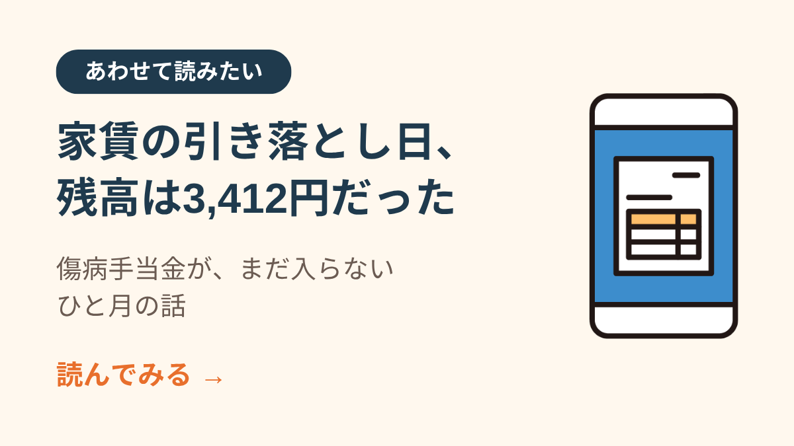
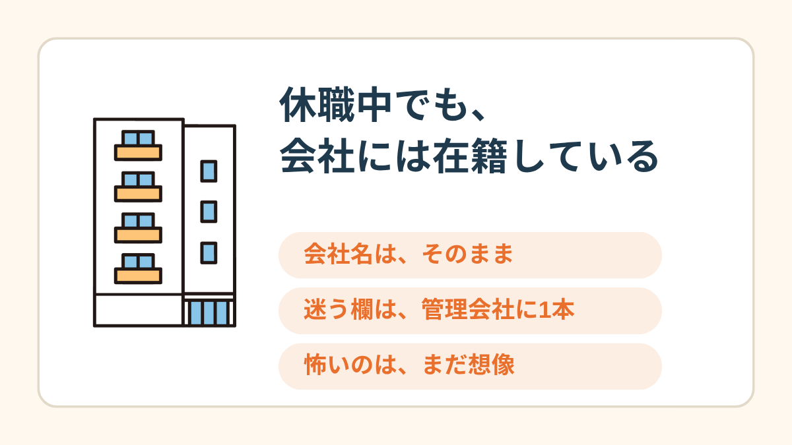

空欄の前で、ボールペンが止まった。休職して7ヶ月目の11月。6年住んでいる部屋の、3回目の更新だった。
封筒は、3日テーブルの上にあった
管理会社の封筒が届いたのは、月曜の夕方。「ご契約更新のご案内」。中身は分かっていたから、開けずにテーブルに置いた。
水曜の夜にやっと開けた。更新料の案内と、更新申込書が1枚。氏名、連絡先、勤務先、勤務先の所在地、電話番号、勤続年数、年収。
2年前の控えも一緒に入っていた。そこには自分の字で「勤続5年」と書いてある。あのときは、何も考えずに書けた欄だった。
止まった欄は、2つだけだった
1つ目は、勤続年数。
うちの会社は、休職している期間を勤続年数に数えない。休職に入るときにもらった書類に、そう書いてあった。入社から数えれば6年。でも会社の数え方だと、5年とちょっと。
「6年」と書いたら、嘘になる気がした。「5年」と書いたら、2年前と同じ数字で、何かあったと思われる気がした。
2つ目は、勤務先の所在地。
働いていたのは駅前の店舗だった。休職と同時に籍は「人事部付」になって、店舗にはもう私の名前がない。じゃあ住所はどこを書くのか。本社なのか、元の店なのか。

「名前と電話番号は秒で書けるのに、勤続年数で手が止まるんですよ。たった2文字の数字なのに。結局その日はペンを置いて、YouTube見て寝ました。なんにも解決してないのに」
怖かったのは、書くことより電話
木曜の夜、また書類の前に座って、気づいた。数字そのものより、もっと先のことが怖かった。
この書類を出したら、管理会社が会社に電話するかもしれない。「そちらにお勤めの方ですか」と。電話に出た人が「その人は今休んでます」と言うかもしれない。
家のことを会社に知られる。会社のことを大家さんに知られる。頭の中で、まだ起きていないことが、階段みたいに下に続いていった。

「入居のときの審査で、会社に在籍確認の電話がいったんですよ。だから更新でもまた来るって思い込んでて。会社の代表番号に私の名前で電話が来る場面を、何回も想像してました。来てもいないのに」

管理会社に、1本だけ電話した
金曜の昼。締め切りまで、あと10日。
電話の前に、言うことをメモに書いた。「更新の書類のことで、書き方を確認したくて」。それだけ。休職のことは、聞かれたら言おうと決めた。
「勤続年数の欄は、入社した年月で書いてもいいですか」
「勤め先は変わっていないのですが、所属の部署の住所が変わりました。どこを書けばいいですか」
出たのは、若い男の人の声だった。「入社年月で大丈夫ですよ」「所属されている部署の住所でお願いします」。拍子抜けするくらい、普通の声だった。
最後に、勇気を出して聞いた。更新のときも、会社に確認の電話をするんですか。
「うちでは、更新のときは特にしていないですね」
受話器を置いて、しばらく天井を見ていた。3日分の想像が、30秒で終わった。もちろん、これはこの管理会社の話で、どこでも同じとは限らない。それでも、聞けば答えが返ってくる種類の怖さだった。

勤務先には、そのまま会社の名前を書いた。休んでいても、籍はある。勤続年数の欄には「2020年4月入社」。所在地は、人事部がある本社の住所。
年収の欄だけは、少し迷って、去年の源泉徴収票の数字をそのまま書いた。土曜の朝、ポストに入れた。
家賃のことで不安が消えたわけじゃない。傷病手当金が入る日と、引き落としの日のずれは、まだ毎月こわい。

傷病手当金が入らないまま、家賃の引き落とし日が来た話 →「出したあと、正直なんにも起きなかったです。起きなかったことに、ちょっと笑いました。あの3日、なんだったんだろうって。でも、あの3日がないと電話もできなかった気もする」

この記事に、聞いてみたいことはありますか？
「自分の場合はどうなんだろう」と思ったことを、気軽に書いてみてください。いただいた質問は個別にお返事したうえで、匿名で記事にすることがあります。